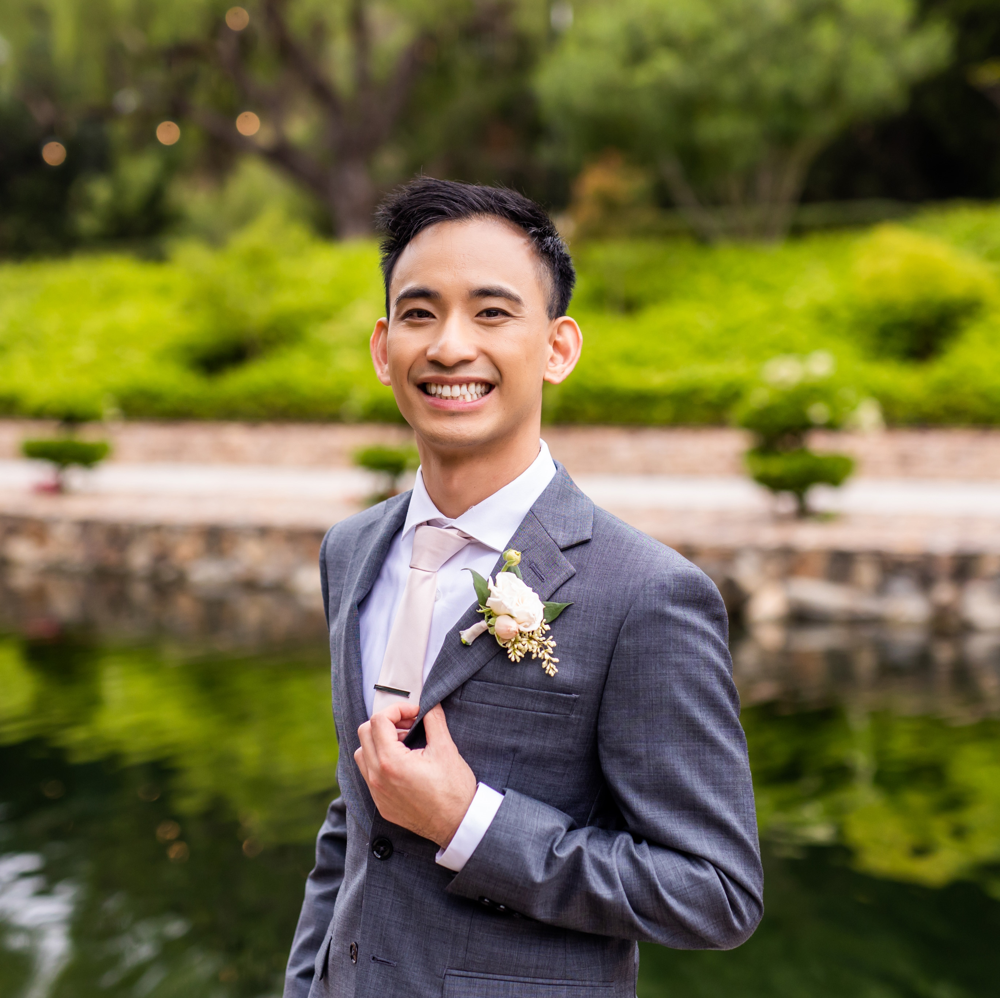

---
# Feel free to add content and custom Front Matter to this file.
# To modify the layout, see https://jekyllrb.com/docs/themes/#overriding-theme-defaults

layout: default
---

<div class="container">
  <div class="item">
    
  </div>
  <div class="inner-container-column">
    <div class="item">
      <a href="https://www.linkedin.com/in/toddnguyen47/" target="_blank" rel="noopener noreferrer">
        
      </a>
    </div>
    <div class="item">
      <a href="https://github.com/toddnguyen47" target="_blank" rel="noopener noreferrer">
        
      </a>
    </div>
  </div>
</div>
